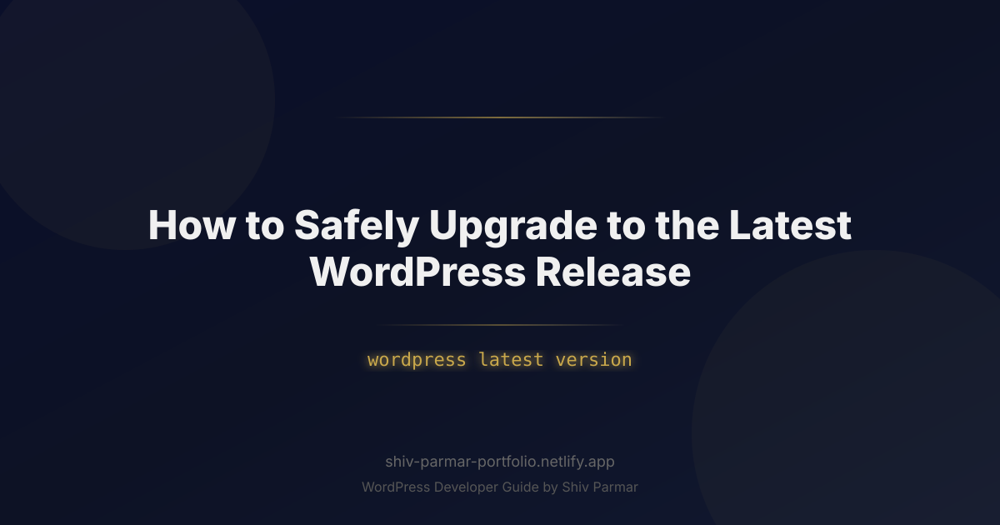

How to Safely Upgrade to the Latest WordPress Release
Table of Contents
Every website administrator encounters a familiar moment of pause when logging into their dashboard: the prominent banner at the top of the screen announcing that the wordpress latest version is available for installation. For many site owners, clicking that shiny "Update Now" button triggers a wave of anxiety. Will a core update crash the site? Will custom functions break? Will custom plugins display the dreaded "White Screen of Death"?
This hesitation is understandable. WordPress powers over 40% of the active web, ranging from simple personal blogs to enterprise-level e-commerce platforms handling millions of dollars in transactions. When an environment is that critical, any system-wide change carries inherent risk. However, delaying updates is far more dangerous than executing them. Running an outdated software stack exposes your digital asset to known security vulnerabilities, performance bottlenecks, and compatibility breakdowns with modern web browsers and hosting infrastructures.
Updating your site does not have to feel like a high-stakes gamble. By following a structured, battle-tested deployment methodology, you can transition your site to the newest core software with absolute zero downtime and zero data loss. This ultimate WordPress guide will walk you step-by-step through the preparation, execution, and verification processes required to safely upgrade to the wordpress latest version every single time.
What is a WordPress Version Upgrade?
A WordPress version upgrade is the process of replacing core application files—the fundamental codebase that drives your CMS—with newer, refined code released by the official open-source core development team. These core files reside primarily in your root directory and the wp-includes and wp-admin directories. Importantly, a standard update alters core system files and database schemas while leaving your custom content (stored in the wp-content directory and database tables) untouched.
To safely navigate updates, you must understand the distinction between the two primary types of releases within the WordPress core release cycle:
- Minor Releases (e.g., WordPress 6.4.1 to 6.4.2): These updates focus strictly on security patches, critical bug fixes, and maintenance tweaks. Minor updates rarely introduce structural architectural changes or deprecations, meaning they carry minimal risk of breaking your theme or plugins. In fact, WordPress enables automatic background updates for minor releases by default.
- Major Releases (e.g., WordPress 6.4 to 6.5): Released two to three times a year, major updates introduce new core features, fundamental updates to the Gutenberg block editor, structural database adjustments, and changes to core PHP APIs. Major upgrades require deliberate preparation, preliminary testing in isolated environments, and thorough post-update verification.
During a major upgrade, WordPress executes background tasks including database schema updates, rewriting deprecated functions, updating internal REST API endpoints, and optimizing JavaScript bundles used within the admin interface. Because themes and plugins rely heavily on core APIs, a major upgrade demands a systematic testing workflow before applying changes directly to your live production server.
Why Upgrading to the Latest WordPress Version Matters in 2026
The modern web environment in 2026 demands unparalleled speed, rigorous data protection, and seamless user experiences. Operating a website on legacy code weakens your defense against modern cyber threats and degrades search engine performance. Staying updated with the wordpress latest version provides several critical advantages:
1. Bulletproof Security and Vulnerability Mitigation
WordPress is open-source software. While open transparency allows millions of developers to audit code for bugs, it also allows malicious actors to analyze security updates and discover unpatched vulnerabilities. When security teams patch a security flaw in a new core release, details of the exploit become public knowledge. Sites running older versions become immediate targets for automated botnets scanning the web for known security holes.
2. Next-Generation Performance and Core Web Vitals
Modern releases continuously refine runtime execution speed, memory consumption, and asset rendering. Recent versions introduce enhanced server-side caching mechanisms, optimized script loading (such as defer and async handling by default), automatic image format conversions (like WebP and AVIF), and faster database query execution. These updates directly improve your Google Core Web Vitals scores—specifically Largest Contentful Paint (LCP) and Interaction to Next Paint (INP)—which directly impact your search engine visibility and user conversion rates.
3. PHP Compatibility and Infrastructure Standards
As server environments evolve to support PHP 8.2, 8.3, and beyond, legacy WordPress core code will generate fatal runtime errors on modern server stacks. Upgrading core guarantees that your application leverages modern PHP performance enhancements, strict type checking, and improved memory management without throwing syntax or execution errors.
4. Advanced Features and Block Editor Innovations
The Block Editor (Gutenberg) and Full Site Editing (FSE) ecosystem advance rapidly. Each core release introduces enhanced design controls, pattern management tools, improved block locking, dynamic data bindings, and streamlined admin workflows. Staying updated ensures your content creation teams can leverage the most efficient publishing tools available.
| Feature Criteria | Outdated WordPress Release | Latest WordPress Version |
|---|---|---|
| Security Posture | High exposure to known exploits and targeted botnet attacks. | Protected by the latest security patches and defensive APIs. |
| PHP Runtime Support | Limited to legacy PHP versions (EOL security risks). | Fully compatible with modern PHP releases (faster execution). |
| Core Web Vitals | Unoptimized asset delivery and legacy script execution. | Native AVIF/WebP support, optimized INP/LCP scripts. |
| Plugin Compatibility | Risk of conflict with modern third-party plugin updates. | Fully aligned with current developer APIs and hooks. |
| Developer Support | Deprecated functions generate notices and slow execution. | Access to state-of-the-art APIs, patterns, and block features. |
Step-by-Step Guide to Safely Upgrading WordPress
To eliminate site downtime and prevent fatal errors, follow this comprehensive five-phase upgrade deployment process. Never skip steps or run major upgrades directly on your live environment without isolated preliminary testing.
Phase 1: Pre-Upgrade Preparation and System Health Check
Before initiating any software updates, analyze your existing site architecture to establish a baseline environment health check.
- Review the Site Health Tool: Navigate to
Tools > Site Healthinside your admin dashboard. Confirm that your system reports no critical configuration warnings regarding memory limits, missing PHP modules, or SQL server version issues. - Check Host Compatibility: Verify that your web hosting environment meets or exceeds the minimum technical recommendations:
- PHP Version 8.1 or higher
- MySQL version 8.0+ or MariaDB version 10.5+
- HTTPS support with valid SSL/TLS certificates
- PHP memory limit of at least 256MB (512MB recommended for dynamic apps)
- Audit Plugins and Active Theme: Check for pending third-party plugin and theme updates. Developers usually release updates days before a major release to ensure compatibility. Update all active plugins and your active theme to their latest tested versions *before* performing the core upgrade.
- Read Core Release Notes: Skim the official release announcement on WordPress.org to identify any major breaking changes, deprecated functions, or database migrations that could impact custom code on your site.
Phase 2: Creating Comprehensive Backups
Never perform an update without a complete, verified backup. A true full site backup consists of two distinct components: your site files and your relational database. Storing backups off-site (cloud storage, separate servers) guarantees rapid recovery even if your primary host becomes unreachable.
If you have SSH access to your server, the fastest and most accurate way to generate a complete backup is using the WordPress CLI (WP-CLI) tool. Execute the following commands in your root terminal:
# Step 1: Export the database to a secure SQL file
wp db export backup-pre-upgrade-$(date +%Y-%m-%d).sql
# Step 2: Create a compressed archive of your complete file structure
tar -czvf site-files-backup-$(date +%Y-%m-%d).tar.gz .
If you prefer using a graphical interface or plugin-based approach, tools like UpdraftPlus, BlogVault, or your web hosting control panel (cPanel, SiteTools, or custom hosting dashboards) can generate a complete backup package containing:
- The MySQL/MariaDB database dump (`.sql` file)
- The entire
wp-contentdirectory (uploads, themes, plugins) - Core configuration files, including
wp-config.phpand.htaccess
Phase 3: Setting Up a Staging Environment
A staging environment is an exact clone of your live production website running on an isolated server domain or subdomain. Testing updates in staging allows you to detect fatal errors, broken layouts, or JavaScript conflicts without impacting live visitors, SEO rankings, or sales revenue.
Many managed hosting providers offer one-click staging setup tools. However, if you are setting up staging manually or on a custom server, execute this workflow:
- Copy all live website files into a dedicated staging directory or subdomain folder.
- Create a new database, export your production database, import it to the new staging database, and run a search-and-replace command to update URLs from
example.comtostaging.example.com. - Update the staging server's
wp-config.phpfile to point to the staging database credentials.
Using WP-CLI on your staging environment, run a search-and-replace operation cleanly without corrupting serialized arrays:
# Replace production domain with staging domain inside staging database
wp search-replace 'https://yourdomain.com' 'https://staging.yourdomain.com' --precise --recurse-objects
Phase 4: Executing the Upgrade
Once your staging environment is operational and backed up, proceed with the upgrade process. You can perform the update via three main methods depending on your access level and preferences.
Method A: Core Upgrade via Dashboard (Standard Method)
- Log into your WordPress admin dashboard on your staging environment.
- Navigate to
Dashboard > Updates. - Locate the notification stating "An updated version of WordPress is available."
- Click the Update to version [X.X] button.
- Allow the system to run uninterrupted. WordPress will put your site into maintenance mode momentarily, download the package, unpack core files, replace legacy binaries, and launch the success screen automatically.
Method B: Command Line Upgrade via WP-CLI (Developer Method)
For developers, systems administrators, or automated deployment flows, WP-CLI provides an ultra-fast, efficient path for managing updates without relying on web browser execution limits.
# Check for available core updates
wp core check-update
# Execute the core software update
wp core update
# Update the database schema to match the new core version
wp core update-db
# Optional: Flush object cache to ensure clean runtime performance
wp cache flush
Method C: Manual Upgrade via SFTP (Recovery/Manual Method)
If your server experiences timeouts, or if your site is locked out due to code failure, a manual upgrade using SFTP will restore system stability.
- Download the wordpress latest version zip package directly from WordPress.org and extract it onto your local computer.
- Open your desktop SFTP client (such as FileZilla or Transmit) and establish a secure connection to your hosting server.
- Navigate to the root directory containing your installation files.
- CRITICAL: Do NOT delete your
wp-config.phpfile or yourwp-contentdirectory. These files hold your credentials, custom media uploads, plugins, and custom themes. - Delete the live server's existing
wp-includesandwp-admindirectories. - Upload the fresh
wp-includesandwp-admindirectories extracted from the downloaded core package to your server. - Upload the remaining individual files from the root of the unzipped fresh package (such as
index.php,wp-login.php,wp-settings.php), allowing your client to overwrite existing root files. - Log into your administration dashboard URL (
yourdomain.com/wp-admin). If prompted, click Update WordPress Database to finalize schema alterations.
Phase 5: Post-Upgrade Verification and Troubleshooting
With the upgrade completed on staging, thoroughly inspect every system component before deploying the changes to your production site.
- Clear All Caching Layers: Flush host-level caches (Varnish, Redis, Nginx FastCGI), plugin-level caches (WP Rocket, W3 Total Cache), and your CDN cache (Cloudflare). Clear your local browser cache.
- Perform Front-End Inspections: Visit critical pages on desktop and mobile devices:
- Homepage and primary menu navigation.
- Blog posts, category pages, and visual blocks.
- E-commerce checkout steps, cart pages, and gateway endpoints.
- Lead forms, user authentication workflows, and search functions.
- Inspect the Browser Developer Console: Open your web browser's Developer Tools (F12) and check the "Console" tab. Verify that no critical JavaScript errors or missing library files appear.
- Review Debug Logs: Enable system error logging in your
wp-config.phpfile to confirm no underlying PHP warnings or fatal errors are occurring in the background.
If everything passes inspection on staging, repeat Phase 4 directly on your production environment, or sync your staging deployment straight to production (depending on host capabilities). Always generate a fresh production database backup right before running the final production upgrade!
Best Practices for Maintaining a Healthy WordPress Site
Maintaining long-term site stability requires shifting from reactive emergency fixes to proactive system management. Integrating these operational best practices into your routine will make future core updates effortless.
1. Enable Automated Debug Logging Safely
Never display error messages openly to public site visitors on production servers. Instead, configure hidden background logging inside your wp-config.php file to record issues automatically when updates occur.
// Enable PHP error logging without exposing output to public visitors
define( 'WP_DEBUG', true );
define( 'WP_DEBUG_LOG', true );
define( 'WP_DEBUG_DISPLAY', false );
@ini_set( 'display_errors', 0 );
Review the generated log file located at /wp-content/debug.log regularly to address minor syntax warnings before they escalate into breaking errors after major releases.
2. Configure Selective Automatic Updates
Not all components require manual oversight. Automating lower-risk updates keeps your stack secure while reserving developer intervention for major architectural shifts:
- Enable Automatic Minor Core Updates: Minor releases (security releases) should run automatically. Ensure this feature is active by adding the following code to your
wp-config.phpfile:define( 'WP_AUTO_UPDATE_CORE', 'minor' ); - Keep Plugin Updates Controlled: Avoid applying blanket auto-updates for highly complex custom plugins (like WooCommerce, LMS plugins, or custom page builders). Test major plugin releases in staging prior to production updates.
3. Maintain Minimal and Modern Plugin Stacks
Every active plugin introduces custom code paths into your core system. Deactivate and completely uninstall plugins that are no longer actively maintained by developers, haven't been updated in over 12 months, or duplicate native core functionality. The leaner your active plugin list, the lower your risk of conflict during major software updates.
4. Enforce PHP Version Alignment
Ensure your hosting server's PHP execution environment stays aligned with modern standards. Running modern core releases on ancient PHP software (such as legacy PHP 7.x branches) creates severe bottlenecking. Plan upgrades so that server PHP updates coincide with core releases.
Common Mistakes to Avoid
Avoiding critical procedural missteps is just as important as following correct update protocols. Watch out for these common upgrade traps:
1. Updating Directly on Live Production Servers
Applying major core updates directly to a live website without preliminary staging testing is the primary cause of sudden, unexpected site outages. Even if individual plugins claim compatibility, unique combinations of active themes, custom functions, and host configurations can trigger unexpected conflicts.
2. Forgetting to Deactivate/Bypass Server Caching
When updates execute, administrative static assets (JavaScript, CSS, block assets) change. If server caching layers or CDN networks serve outdated cached copies of core scripts alongside updated core PHP files, your dashboard interface may break visual layouts or lose drag-and-drop functional response.
3. Modifying Core Files Directly
Never edit core files inside wp-includes or wp-admin directory files to implement custom site functions or bug fixes. When you update your software, the installer completely overwrites these core directories. Any custom code placed directly inside core software will be erased instantly. Always use custom child themes, custom plugins, or dedicated code snippet plugins to extend site functionality.
4. Neglecting Database Backups Before Updates
File backups alone are insufficient. Major core software upgrades frequently modify database tables and option structures. If an update fails mid-stream during an active database migration, your file structure may be intact while your content relational records become corrupted. Always export a full database backup before running any core update.
5. Ignoring Outdated Theme Support
Site administrators often concentrate exclusively on plugin compatibility while ignoring custom themes. Legacy themes containing outdated layout engines, bundled internal libraries (like older versions of Isotope, Slick Slider, or legacy jQuery), or overridden core template files can cause front-end rendering failures after major block engine updates. Verify theme compatibility and check for available theme updates alongside core upgrades.
Upgrading to the wordpress latest version doesn't have to be stressful. By maintaining isolated staging environments, generating comprehensive backups, and running systematic verification steps, you can keep your web properties fast, modern, and completely secure year-round.
Conclusion
Upgrading to the wordpress latest version doesn't have to be a nerve-wracking process. By taking the right precautions—such as creating a full site backup, testing updates in a staging environment, and verifying plugin compatibility—you can safely update your WordPress website without risking downtime or data loss. Keeping your site updated is essential for maintaining top-tier security, improving performance, and gaining access to the platform's latest features.
We hope this step-by-step WordPress guide gives you the confidence to manage your site's routine maintenance smoothly. However, managing core updates, custom code, and complex plugin ecosystems can sometimes become overwhelming or risky for busy site owners. Relying on professional oversight ensures your digital asset stays safe, optimized, and fully operational.
If you prefer to leave the technical heavy lifting to an expert, Shiv Parmar is available for high-quality WordPress development work worldwide. Whether you need a seamless site upgrade, custom development, performance tuning, or ongoing site management, Shiv provides tailored solutions for businesses of all sizes. Contact Shiv Parmar today to take your website to the next level!